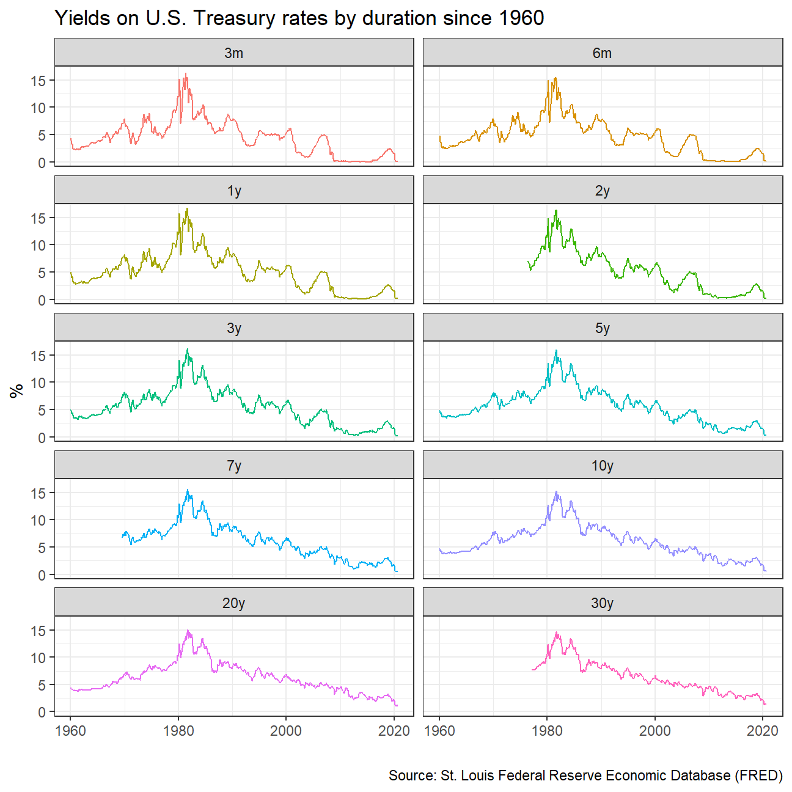
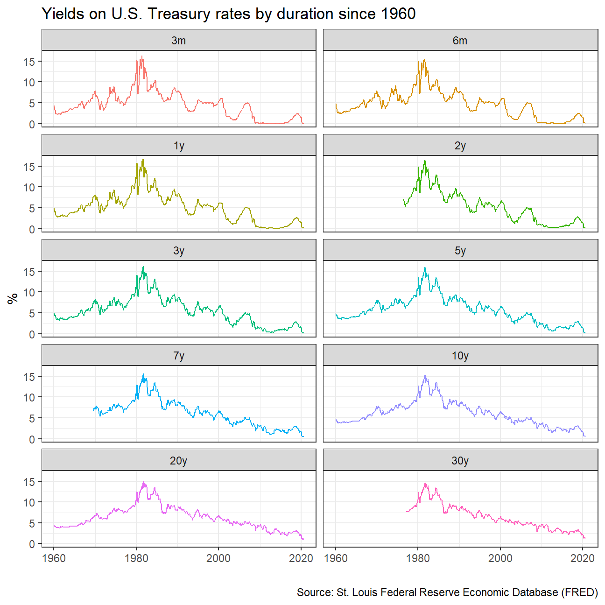
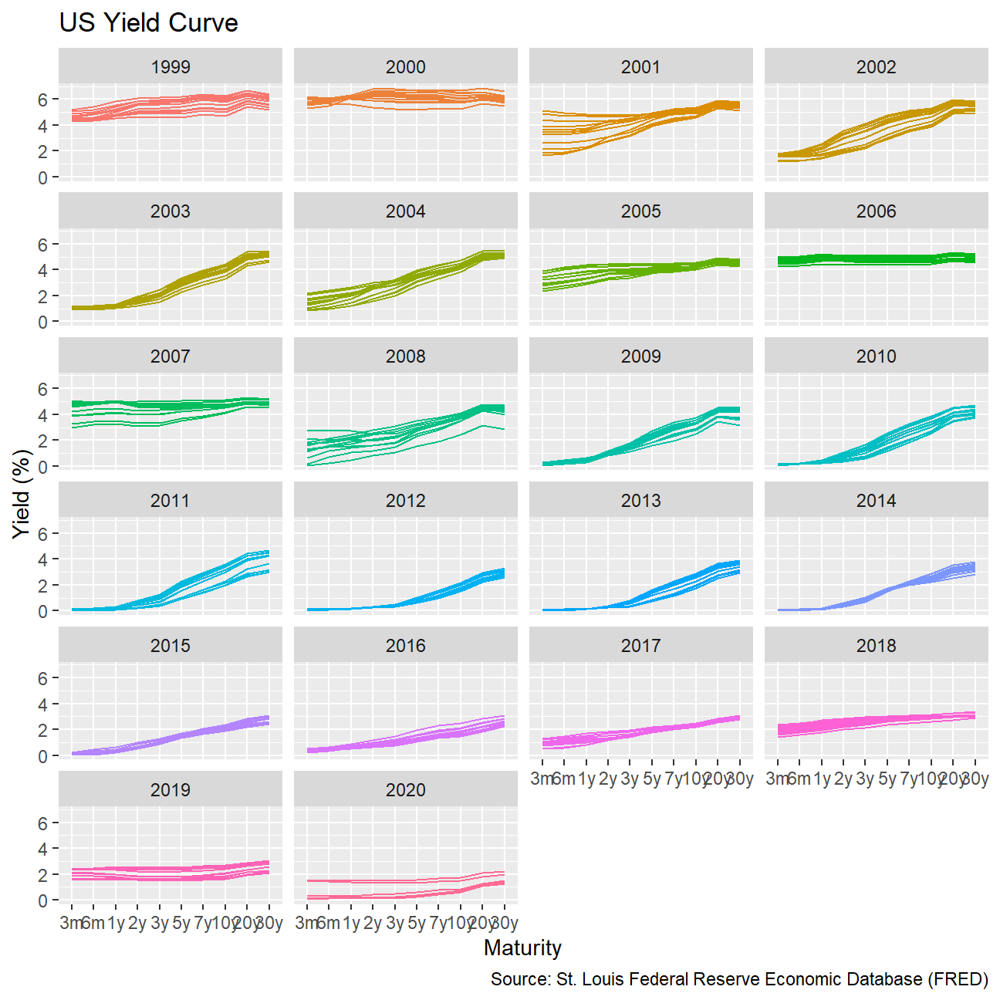
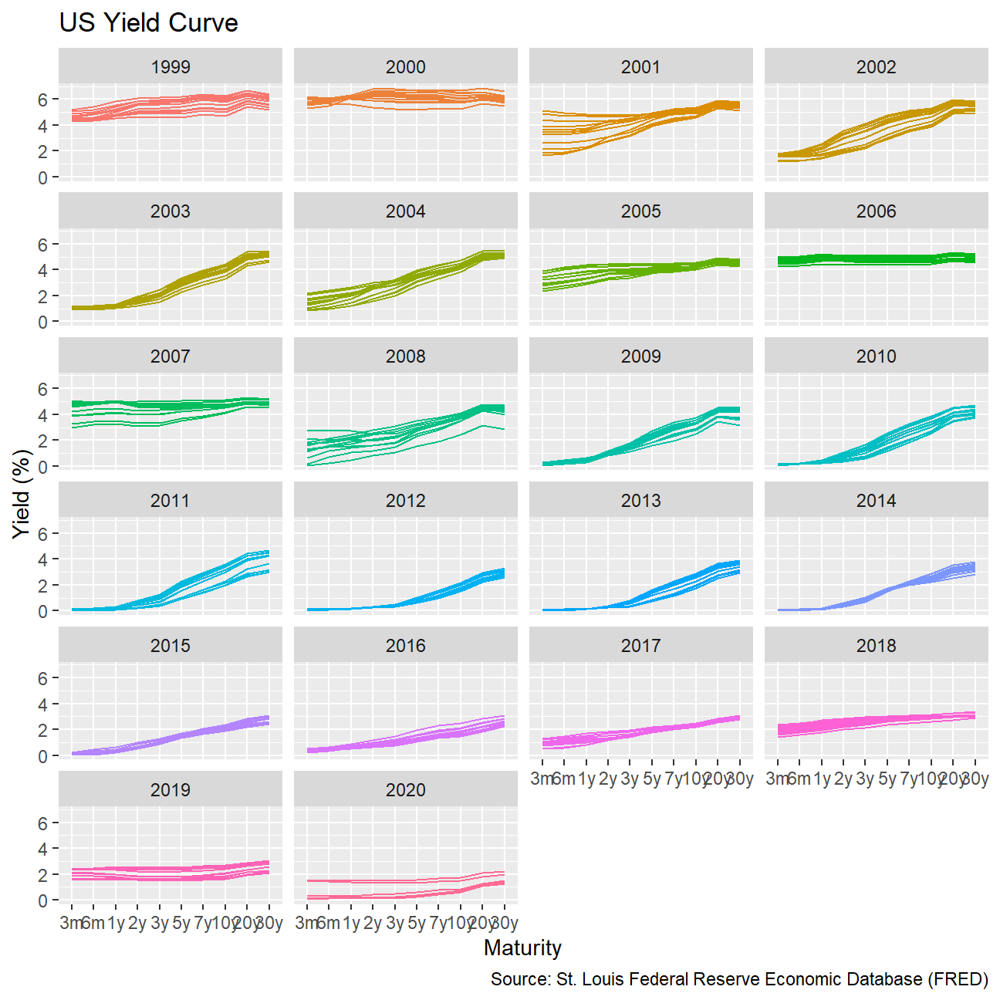
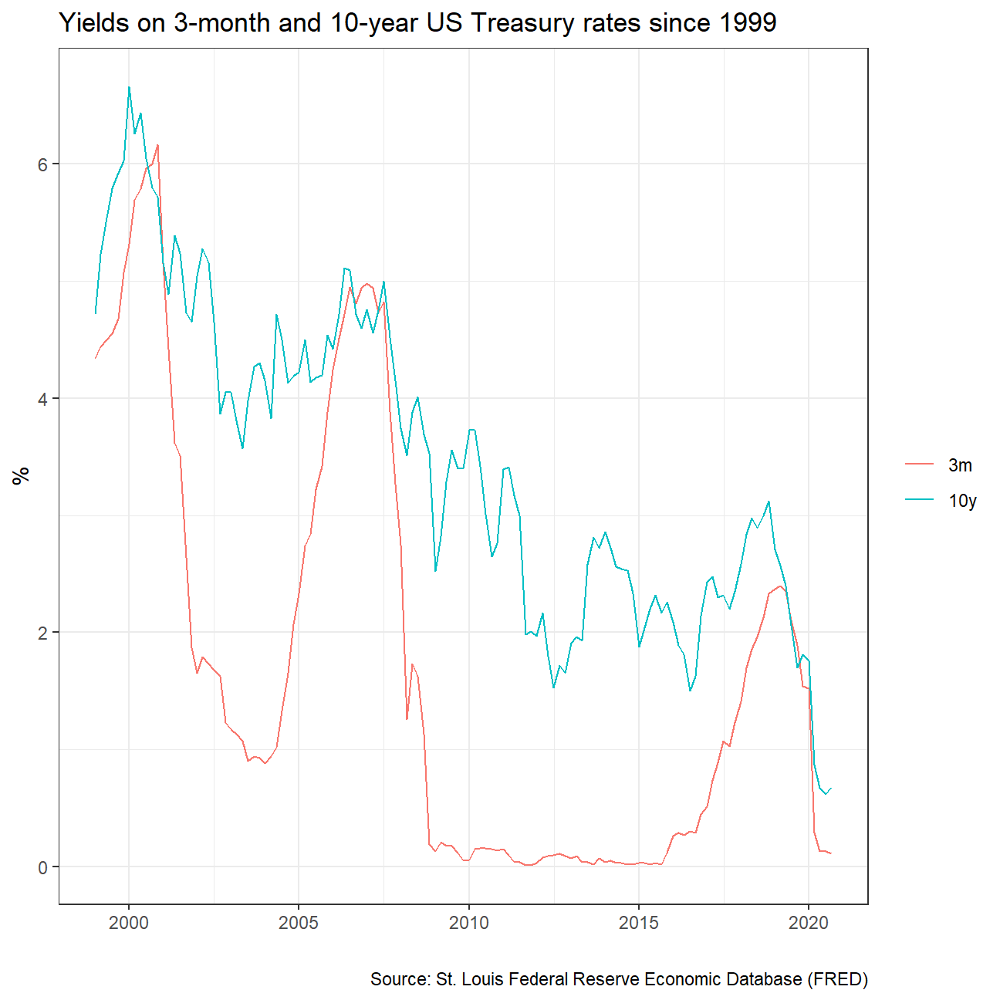
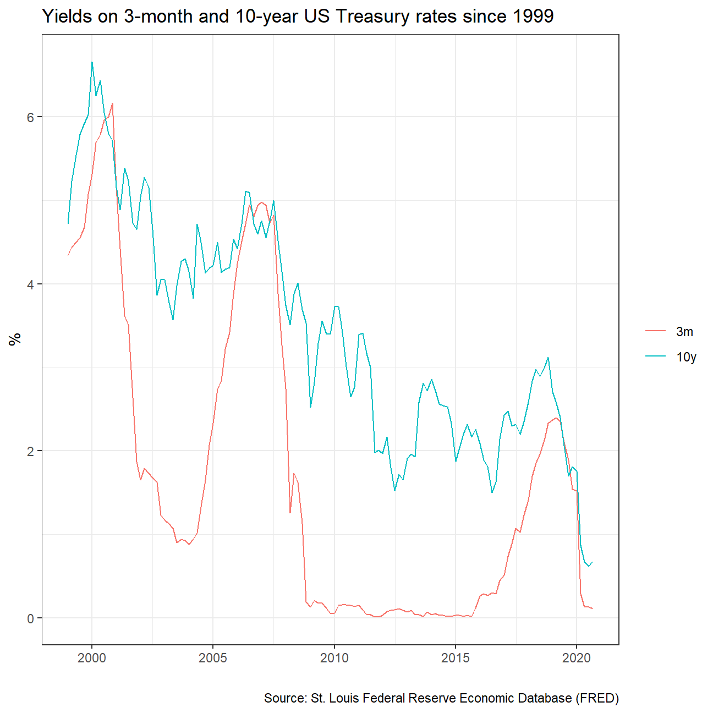
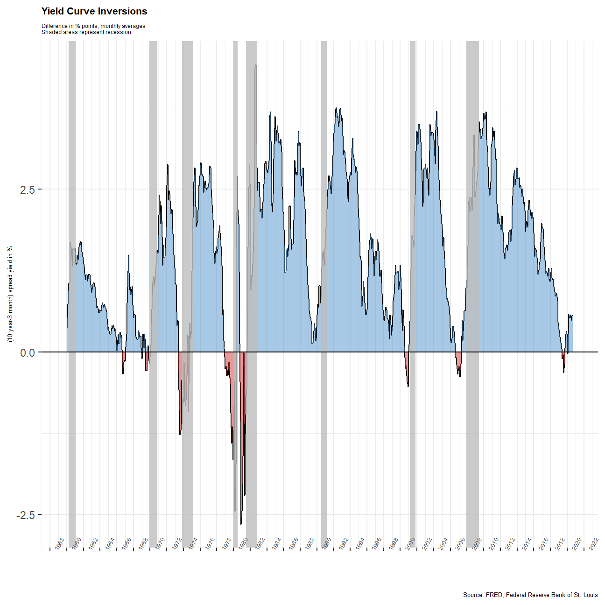

Plotting the yield curve
Yields on US rates by duration since 1960
 

Monthly yields on US rates by duration since 1999 on a year-by-year basis
 

3-month and 10-year yields since 1999
 

# get US recession dates after 1946 from Wikipedia
# https://en.wikipedia.org/wiki/List_of_recessions_in_the_United_States
recessions <- tibble(
from = c("1948-11-01", "1953-07-01", "1957-08-01", "1960-04-01", "1969-12-01", "1973-11-01", "1980-01-01","1981-07-01", "1990-07-01", "2001-03-01", "2007-12-01"),
to = c("1949-10-01", "1954-05-01", "1958-04-01", "1961-02-01", "1970-11-01", "1975-03-01", "1980-07-01", "1982-11-01", "1991-03-01", "2001-11-01", "2009-06-01")
) %>%
mutate(From = ymd(from),
To=ymd(to),
duration_days = To-From)%>%
filter(to > 1960)
recessions## # A tibble: 8 x 5
## from to From To duration_days
## <chr> <chr> <date> <date> <drtn>
## 1 1960-04-01 1961-02-01 1960-04-01 1961-02-01 306 days
## 2 1969-12-01 1970-11-01 1969-12-01 1970-11-01 335 days
## 3 1973-11-01 1975-03-01 1973-11-01 1975-03-01 485 days
## 4 1980-01-01 1980-07-01 1980-01-01 1980-07-01 182 days
## 5 1981-07-01 1982-11-01 1981-07-01 1982-11-01 488 days
## 6 1990-07-01 1991-03-01 1990-07-01 1991-03-01 243 days
## 7 2001-03-01 2001-11-01 2001-03-01 2001-11-01 245 days
## 8 2007-12-01 2009-06-01 2007-12-01 2009-06-01 548 daysyield_3month <- yield_curve %>% #create new dataset
filter(var %in% "3-Month Treasury Bill") %>%
#only 3m treasury bills
select(date, maturity, price) %>% #select only the columns "date", "maturity", and "price"
mutate(tbill3m = price) #create new column
yield_10year <- yield_curve %>% #create new dataset
filter(var %in% "10-Year Treasury Rate") %>% #only 10y treasury bills
select(date, maturity, price) %>% #select only the columns "date", "maturity", and "price"
mutate(tbond10y = price) #create new column
yield_cummulative <- left_join(yield_3month, yield_10year, by = "date") %>% #left-join the two new datasets
mutate(spread = tbond10y - tbill3m) %>% #calculate the spread in new column
select(date, spread) #select only "date" adn "spread"
ggplot(yield_cummulative, aes(x = date, y = spread)) + #create ggplot
geom_line() + #type = linegraph
theme_bw() + #background of plot = white
geom_ribbon(aes(ymin= 0, ymax = pmax(0,spread)), fill = "steelblue3", alpha = 0.5) + #positive values are blew
geom_ribbon(aes(ymin= pmin(0, spread), ymax = 0), fill = "brown3", alpha = 0.5) + #negative values are red
theme(axis.text.x = element_text(angle = 60, hjust = -0.5, size = 5), #size of x axis lables
plot.title = element_text(size = 8, face = "bold"), #change title theme
plot.subtitle = element_text(size = 4.5), #cahnge subtitle size
plot.caption = element_text(size = 5), #change caption size
axis.title.y = element_text(size = 5), #change y axis label size
panel.border = element_blank(), #no border
) + #no axis ticks
scale_x_date(date_breaks = '2 years', date_labels = "%Y") + #change the scale of x labels
labs(title = "Yield Curve Inversions", subtitle = "Difference in % points, monthly averages \nShaded areas represent recession", y = "(10 year-3 month) spread yield in %", caption = "Source: FRED, Federal Reserve Bank of St. Louis", x = "") +
geom_rect(data = recessions, inherit.aes = FALSE, aes(xmin = From, xmax = To, ymin = -Inf, ymax = Inf), fill = "grey", alpha = 0.8) + #recessions in grey
geom_hline(yintercept = 0, color = "black") #add black line at yield spread = 0